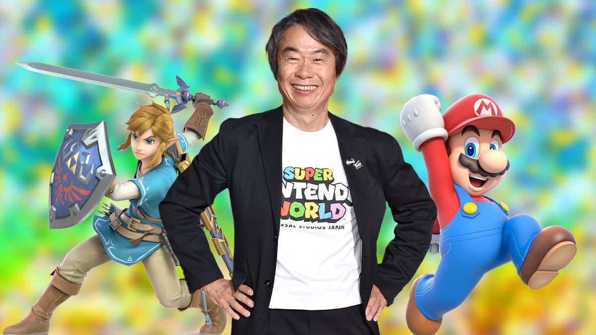

About
Welcome to the Nintendo Switch - the innovative gaming system that lets you play anywhere, anytime! At Nintendo, we've been creating unforgettable gaming experiences for over 130 years. Founded in 1889 in Kyoto, Japan, we began as a manufacturer of handmade Hanafuda playing cards. Since then, we've grown into one of the world's most beloved video game companies, known for our iconic franchises and dedication to fun, family-friendly entertainment. The Nintendo Switch is our latest creation, and we're proud to say it's been a huge hit with gamers of all ages. With its unique hybrid design, you can play your favorite games on your TV at home, or take the action on the go with its handheld mode. And with the ability to connect with other Switch players online, you can enjoy multiplayer games with friends and family from all over the world. But the Switch is more than just a gaming system - it's a way to explore new worlds, to connect with others, and to experience joy in a whole new way. From classic franchises like Mario and Zelda to exciting new titles like Animal Crossing: New Horizons and Splatoon 2, there's something for everyone on the Switch. So why wait? Join the millions of players around the world who have already discovered the magic of the Nintendo Switch. Whether you're a hardcore gamer or just looking for a fun way to pass the time, we know you'll love it.
